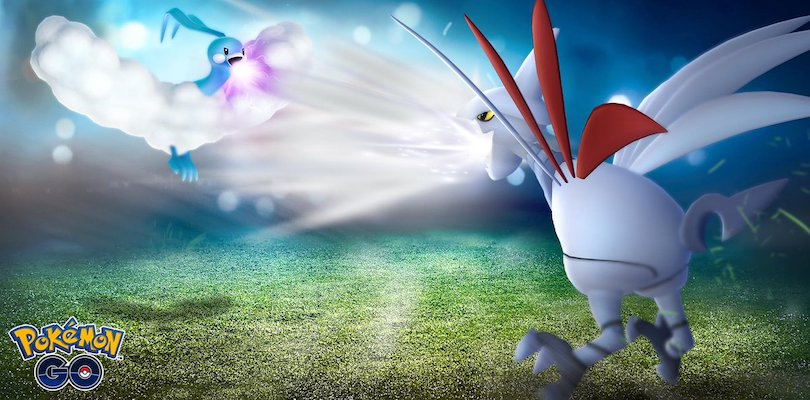
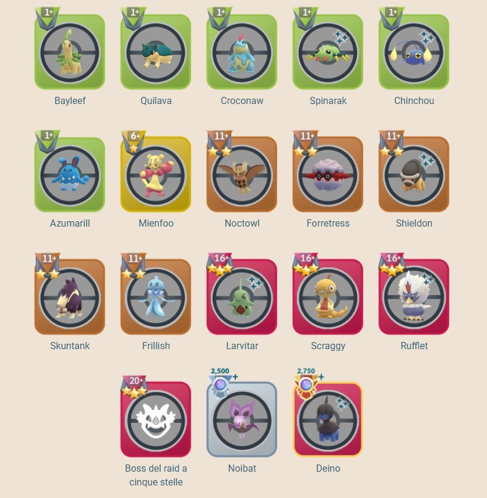

Svelata la decima stagione della Lega Lotte go
È in arrivo la decima stagione della Lega Lotte GO, che avrà inizio alle ore 21:00 del 29 novembre 2021. Seguirà le stesse regole della nona stagione e terminerà il 28 febbraio 2022.
Inoltre, gli Allenatori che riusciranno a raggiungere il livello Leggenda potranno registrarsi in anticipo per i Campionati Mondiali del 2022. Con la decima stagione della Lega Lotte GO, le possibili lotte quotidiane aumentano da 5 a 20 (in totale 100) e si potrà ricevere il quadruplo della quantità di polvere di stelle che vi era in precedenza.
Programmazione della decima stagione della Lega Lotte GO
Vi riportiamo di seguito la programmazione completa della nuova stagione della Lega Lotte GO:
- 29 novembre – 13 dicembre: Lega Mega e Lega Mega Remix;
- 13 dicembre – 27 dicembre: Lega Ultra, Lega Ultra Remix e Coppa delle Feste (con inizio il 16 dicembre);
- 27 dicembre – 10 gennaio: Lega Master, Lega Master Classica e Coppa delle Feste (che termina il 31 dicembre);
- 27 dicembre – 10 gennaio: Lega Master, Lega Master Classica e Coppa delle Feste (che termina il 31 dicembre);
- 10 gennaio – 24 gennaio: Lega Mega e Sinnoh Cup;
- 24 gennaio – 7 febbraio: Lega Ultra e Lega Ultra Premier Classica;
- 7 febbraio – 21 febbraio: Lega Master, Lega Master Premier Classica e Coppa Tenerezza;
- 21 febbraio – 28 febbraio: Lega Mega, Lega Ultra, Lega Master e Coppa Johto.

Ricopense
Avanzando di livello, saranno facilitati gli incontri con alcuni Pokémon, che saranno più facili da catturare:
- dal livello 1: Bayleef, Quilava, Croconaw, Spinarak, Chinchou e Azumarill;
- dal livello 6: Mienfoo;
- dal livello 11: Noctowl, Forretress, ShieldonSkuntank e Frillish;
- dal livello 16: Larvitar, Scraggy e Rufflet;
- dal livello 20: Boss dei raid a cinque stelle;
- livello Veterano: Noibat;
- livello Esperto: Deino;
- livello Leggenda: Pikachu Lottatore.
Saranno inoltre disponibili i seguenti premi per personalizzare il proprio avatar:
- livello 3: oggetti avatar di Pikachu Lottatore;
- livello Fantallenatore: guanti stile Elisio;
- livello Veterano: scarpe stile Elisio;
- livello Esperto: pantaloni stile Elisio;
- livello Leggenda: giacca e posa stile Elisio.
